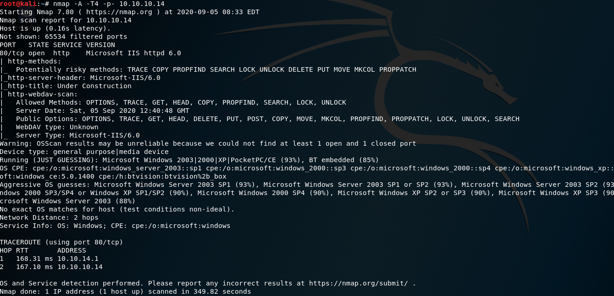

Ok there is one port open. IIS 6.0 is a incredibly old version. There is 10.0 version recently.
Another interresting item is Potentially risky methods. With put potentially we could put a malicious file on the server. And it's not always available to do so even if it is a method that's allowed.
The other one is trace there is something called cross site tracing.
That is when you have a cross site scripting vulnerability and you have the capability of running trace, can lead a cross site tracing it's a much older exploit but when you see potentially risky method of trace show up this is why. TCM "if i were to see this on a web app pentest i'd probably say hey why are you running trace and most people would turn it off "
okey we might do nikto scan or directory busting etc. But since this version is very old let's google this version for exploits

rapid7 and exploitdb let's take a look at both.

okey seems like there are three requirements and two of them is checked

and OS is likely to be Windows Server 2003 R2 so okey now let's take a look at rapid7 because metasploit is our favourite


okey now we will set this options


we could get a reverse shell but we don't know who we are.(because we couldn't execute getuid) okey let's look at processes maybe we could find some information about that.

okey still we don't know who we are but at least we know that we're not authority on the system because when we are authority on the system we could look at into these processes(like 1812, 2920, 3192)
Okey now we'll learn a new command new thing and that is migrate command

(https://security.stackexchange.com/questions/90578/how-does-process-migration-work-in-meterpreter )
let's migrate to 1860

by searching privesc through suggester is not a realistic view of point by the way. In real world we are looking for active directory privesc.

let's try these respectively

it's worked.
When there is no user on where you are in terms of session better off migrate the process which have a user